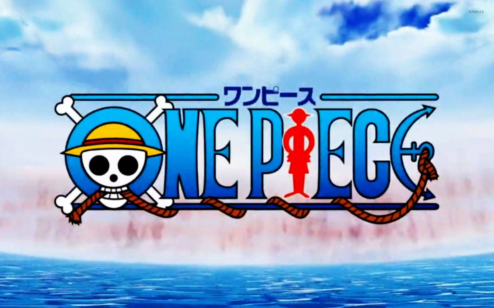

é uma série de mangá escrita e ilustrada por Eiichiro Oda. Os capítulos têm sido publicados na revista Weekly Shōnen Jump, tendo sua primeira publicação em 22 de julho de 1997, com os capítulos compilados e publicados em 111 volumes tankōbon pela editora Shueisha até março de 2025. One Piece segue as aventuras de Monkey D. Luffy, um jovem cujo corpo ganhou as propriedades de borracha após ter comido uma fruta do poder acidentalmente. Com sua tripulação, os Piratas do Chapéu de Palha, Luffy explora a Grand Line em busca do tesouro mais procurado do mundo, o "O Grande Tesouro Entrelaçador/ Símbolo Único" - "One Piece"/ "ひとつなぎの大秘宝" - "ワンピース" (Hitotsunagi no Daihihou - One Piece), a fim de se tornar o próximo Rei dos Piratas. One Piece atingiu a marca de mil capítulos publicados na Weekly Shonen Jump em janeiro de 2021, se tornando um dos raros mangás a ultrapassar tal marca.
O mangá foi adaptado em um episódio OVA produzido pela Production I.G em 1998, e num anime produzido pela Toei Animation, transmitido no Japão desde 1999. Além disso, a Toei Animation produziu catorze filmes de anime, um OVA e treze episódios especiais de televisão. Foram lançadas também vários tipos de mídias desenvolvidas por diversas empresas relacionadas à série, como um jogo de cartas colecionável, e vários jogos eletrônicos. A série de mangá é licenciada e publicada no Brasil pela editora Panini Comics. A série de anime já foi exibida no Brasil, e em Portugal. Atualmente a série é transmitida simultaneamente pela Crunchyroll no Brasil e transmitida pelo Netflix com uma nova dublagem em português brasileiro desde 2020
One Piece recebeu elogios pelo seu enredo, humor e caracterização. Vários volumes do mangá quebraram recordes de publicação, incluindo a maior tiragem inicial de qualquer livro no Japão. O sítio oficial da série anunciou que o mangá estabeleceu um recorde mundial como "a série de quadrinhos de um mesmo autor com mais cópias publicadas no mundo". Em agosto de 2022, tinha mais de 516,6 milhões de cópias em circulação em 61 países e regiões em todo o mundo, tornando-se a série de mangá mais vendida da história e a série de quadrinhos mais vendida impressa em volume de livro. Foi a série de mangá mais vendida pelo décimo primeiro ano consecutivo em 2018. One Piece é uma das franquias de mídia com maior bilheteria de todos os tempos, estima-se que tenha gerado mais de 21 bilhões de dólares em receita total de franquia, a partir de mangás, animes e filmes, jogos e mercadorias